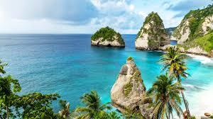

Destination Review
Bali, Indonesia, is a paradise for nature lovers and adventure seekers alike. The island is known for its beautiful beaches, rich culture, and vibrant nightlife. Whether you want to relax on the beach, explore lush rice terraces, or visit ancient temples, Bali has something for everyone.
Travel Tips for Bali
- Always carry sunscreen as the sun can be intense.
- Respect local customs and dress modestly when visiting temples.
- Be prepared for long walks and hikes in the rice terraces.
- Use local transport like scooters or taxis for convenience.
- Try traditional Balinese food like Babi Guling (suckling pig) for a true cultural experience.